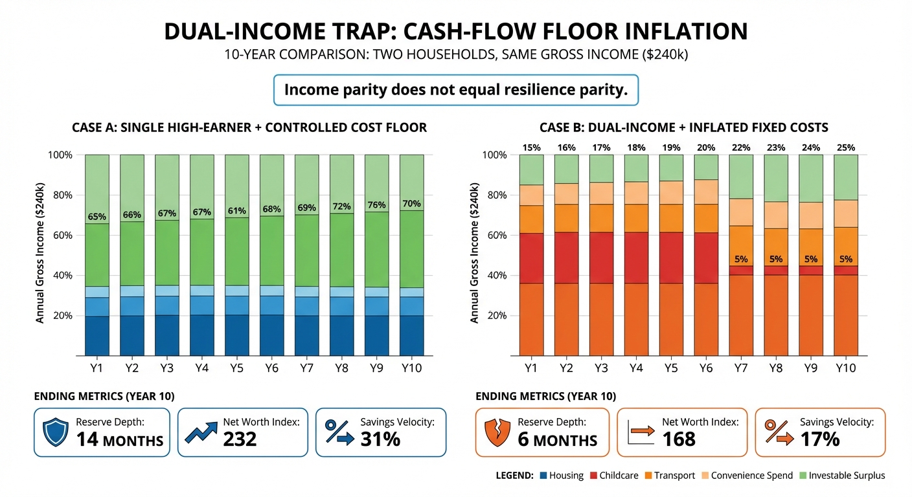
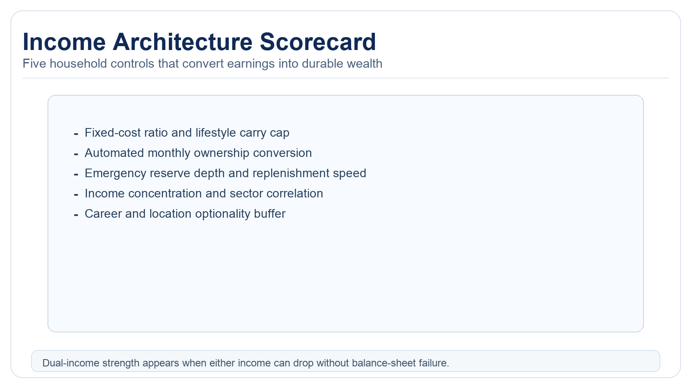

The Dual-Income Trap: Why Two Salaries Often Build Less Wealth Than One
Two incomes increase gross earnings. They do not automatically improve wealth growth rate. Household structure determines whether the second salary compounds or disappears.
The common assumption in personal finance is linear: if one salary builds wealth, two salaries build more wealth faster. In real households, the relationship is often non-linear because costs rise quickly while savings habits lag. The result is a common paradox: households with high gross income but low savings buffer, weak flexibility, and fragile net worth growth. This pattern appears across income brackets, though the specific cost drivers may differ between middle-class and high-earning professional households.

How The Trap Forms
Lifestyle floor inflation
Two cars, larger housing, childcare, paid convenience, and expanded service spending can raise the monthly spending rate faster than the second salary raises savings potential. Once fixed costs rise, income volatility becomes more dangerous. This inflation often occurs through incremental decisions rather than conscious planning, creating a dependency on maintaining both incomes at current levels. The psychological effect of higher perceived earnings can accelerate this process, as households feel justified in upgrading their standard of living.
Tax stacking and benefit phase-outs
Combined income can push households into less favorable tax brackets and reduce eligibility for credits or subsidy structures. The actual value of the second salary can be materially lower than gross pay implies. This includes phase-outs for child tax credits, education benefits, retirement savings incentives, and healthcare subsidies. The marginal tax rate on the second income can approach 50% or higher when accounting for state taxes, phase-outs, and lost benefits, creating a significant obstacle against wealth accumulation.
Flexibility loss
When both earners are locked into servicing fixed costs, career choices shrink. The household loses resilience to layoffs, health disruptions, relocations, or caregiving shocks. This loss shows up as reduced ability to pursue career advancement opportunities requiring temporary income reduction, inability to care for family members during emergencies, and heightened financial stress during economic downturns. The household becomes a rigid system vulnerable to any disruption in its income streams.
Resilience paradox
High-income dual-earner households often assume diversification across two salaries provides safety. In practice, both incomes can still be correlated to one sector, one city, and one economic condition, especially in professional clusters. Geographic concentration in high-cost urban areas, industry concentration in technology or finance, and similar career trajectories can create shared risk despite apparent income diversification. True diversification requires separation across economic sectors, revenue models, and geographic risk exposures.
Model: Same Gross Income, Different Outcomes
Consider two households with the same combined gross earnings over ten years. Household A is a single high-earner family that caps fixed costs aggressively and automates asset accumulation. Household B is a dual-income family that scales lifestyle to current earnings. Household B often reports higher consumption quality in expansion years, but Household A can show higher savings rate, deeper reserves, and stronger weathering of downturns. The critical difference emerges during economic contractions: Household A maintains its savings rate and flexibility while Household B faces immediate pressure to maintain lifestyle commitments despite potential income reduction.
Practical insight: income is an input. Wealth is an output of conversion rate, cost discipline, and shock absorption. The most successful households treat income increases as opportunities to accelerate asset accumulation rather than expand consumption, maintaining a strategic gap between earnings and fixed obligations.
Childcare and Housing Are The Main Multipliers
For many urban households, childcare plus housing costs consume most of the second salary during key accumulation years. If these costs are financed through recurring debt or long-term commitments, future flexibility declines further. The childcare expense often functions as a temporary but massive fixed cost that can eliminate the net benefit of the second income when calculated after taxes and work-related expenses. Housing decisions made during dual-income periods frequently create permanent cost structures that persist beyond the childcare years, locking in higher fixed obligations.
This does not imply dual-income households should reduce participation. It implies they need explicit structure. Without structure, growth in nominal income can coexist with flat or declining resilience. The structure must account for the temporal nature of childcare costs while preventing housing decisions from permanently elevating the household's cost structure beyond what one income could support.
Income Architecture Scorecard

Track five metrics quarterly: fixed-cost ratio, savings conversion rate, reserve depth, income concentration, and flexibility buffer. A strong household can sustain at least one major income shock without forced asset sale. A weak household cannot survive one disruption despite high gross pay. The fixed-cost ratio should remain below 50% of net income, savings conversion should exceed 20% of gross, reserves should cover six months of essential expenses, income sources should demonstrate low correlation, and the flexibility buffer should allow for at least one career transition without financial distress.
Execution Rules That Work
1) Cap lifestyle spending before bonuses and raises arrive
Pre-commit fixed-cost ceilings so incremental income flows first to reserves and asset accumulation. Establish written guidelines for housing costs as a percentage of the lower income, vehicle expenses as a fixed amount regardless of income growth, and maximum recurring service subscriptions. This creates automatic discipline against lifestyle inflation and ensures new income primarily enhances financial security rather than recurring obligations.
2) Run two stress tests annually
Test one-income loss for 12 months and childcare/housing cost increase scenarios. If both fail, rebalance immediately. The stress testing should include realistic assumptions about job search duration, healthcare cost changes, and potential need for geographic mobility. Document the specific actions required to restore stability, such as which expenses would be eliminated first and which assets would be liquidated if necessary.
3) Separate identity spending from structural spending
Families can spend more where values matter, but recurring fixed obligations need strict limits. Identity spending includes education, experiences, and charitable giving that align with family values. Structural spending comprises housing, transportation, and utilities that create recurring obligations. By consciously allocating resources to value-aligned discretionary spending while minimizing structural fixed costs, households maintain flexibility without sacrificing meaningful consumption.
4) Design for one-income survivability
The strongest dual-income households are those where either income can drop without severe financial damage. This requires maintaining fixed costs sustainable on either income alone, building reserves equivalent to the lower income's annual earnings, and ensuring both careers maintain independent viability. This design principle creates true flexibility rather than dependency, allowing strategic career moves, sabbaticals, or caregiving periods without financial catastrophe.
Source List
U.S. Bureau of Labor Statistics. (2024). Consumer Expenditure Survey.
OECD. (2025). Family Database (childcare and household structure indicators).
IRS. (2025). Tax bracket and credit framework references.
Federal Reserve. (2023). Survey of Consumer Finances.